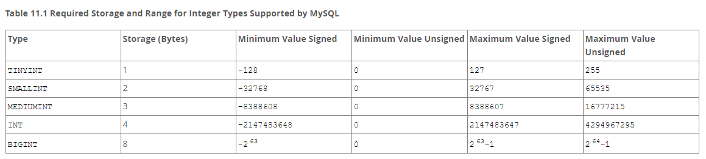

Types de données
Données numériques Données temporelles *Données alphanumériques
Les bases de données sont fortement typées. Chaque colonne peut contenir un type de donnée unique. Il est impossible de le modifier après la création.
Il faut porter une attention particulière aux types, car l'espace de stockage est crucial dans une BD. Après tout, on y stocke des milliers voire des millions d'enregistrements.
Numériques
Pour les données entières, on trouve les types suivants

Tiré de https://dev.mysql.com/doc/refman/8.0/en/integer-types.html
Pour les valeurs décimales, on trouve deux catégories : celles à valeur exacte (virgule fixe) et à valeur approximée (virgule flottante).
À moins de besoins particuliers, les types à virgule flottante sont ceux à privilégier. La quasi-totalité des langages de programmation utilise une représentation à virgule flottante pour représenter les nombres réels.
Pour les nombres à virgule fixe, les types DECIMAL et NUMERIC peuvent être utilisés. Ils fonctionnent de façon identique.
Pour chacun, il faut spécifier deux valeurs pour déterminer leur précision, soit le nombre total de chiffres et le nombre de chiffres de décimales.
Par exemple NUMERIC (5, 2) permet de stocker de -999,99 à 999,99
Pour les types en virgule flottante deux types sont disponibles: FLOAT et DOUBLE.
| Types | Octets de stockage | Valeur min (>0) | Valeur max |
|---|---|---|---|
| FLOAT | 4 | 1.175494351 E - 38 | 3.402823466 E + 38 |
| DOUBLE | 8 | 2.2250738585072 E - 308 | 1.7976931348623 E + 308 |
Temporelles
Cinq types de données temporelles sont disponibles.
Tiré de https://dev.mysql.com/doc/refman/8.0/en/date-and-time-types.html
DATE permet de stocker des dates de 1000-01-01 à 9999-12-31. Le format des dates (tous les types de dates) est AAAA-MM-JJ (en anglais YYYY-MM-DD).
TIME stocke les heures de -838:59:59 à 838:59:59. Le format de toutes les dates est hh:mm:ss (en anglais hh:mm:ss).
Différence entre DATETIME et TIMESTAMP
DATETIME stocke les dates sous format textuel. Le format supporte les dates de 1000-01-01 00:00:00 à 9999-12-31 23:59:59.
TIMESTAMP compte le nombre de secondes écoulées depuis le 1er janvier 1970. Le format supporte les dates de 1970-01-01 00:00:01 à 2038-01-19 03:14:07.
Le type YEAR permet de stocker des années à 2 ou 4 chiffres.
Pour les années à 2 chiffres, MySQL applique la conversion suivante.
0 à 69 → 2000 à 2069 70 à 99 → 1970 à 1999
Alphanumériques
On retrouve les types de données suivantes pour contenir des caractères alphanumériques (string).
- CHAR
- VARCHAR
- TEXT
- BLOB
- ENUM
Le type CHAR permet de stocker jusqu'à 255 caractères. Le type VARCHAR permet de stocker jusqu'à 65 535 caractères. On indique entre parenthèses la taille à réserver pour la colonne.
La différence entre CHAR et VARCHAR est que CHAR réserve toujours tout l'espace disponible. VARCHAR utilise un caractère délimiteur lui permettant d'utiliser que l'espace requis plus un bit (pour le délimiteur) s'il y a 255 caractères et moins et 2 caractères s'il y a plus de 255 caractères.
Tiré de https://dev.mysql.com/doc/refman/8.0/en/char.html
Généralement, on préfère utiliser VARCHAR si la taille de l'entrée peut varier.
Bien qu'il soit rare que l'on entrepose de longs textes dans une BD (on préfère le faire dans des fichiers). Les types TEXT et BLOB permettent de le faire.
Tiré de https://dev.mysql.com/doc/refman/8.0/en/storage-requirements.html#data-types-storage-reqs-strings
Donc un BLOB demande en espace $L+2$ bytes où $L < 2^{16}$.
On résout pour $2^{16} - 1 =65 535 + 2=65 537$ octets (64 Ko) sont nécessaires pour stocker 65 535 caractères. (en français avec $+/- 6$ mots par lettre en moyenne cela représente un texte d'environ 1100 mots).
LONGBLOB permet de contenir un texte d'environ 1 million de pages! (à 500 mots par page)
Dans le cadre du cours, il faut utiliser BLOB plutôt que TEXT.
Image ou vidéo
Pour stocker une image avec une résolution de 1920 par 1080, il faut prévoir environ 100 Mo. Un BLOB peut contenir 65 Ko et un LONGBLOB 4.095 Go, donc il est possible d'entreposer une image en BD.
Une vidéo HD demande 1.5 Go par heure, il serait techniquement possible de la stocker dans une BD.
CEPENDANT, les tables étant lues séquentiellement, il va être très très très long de manipuler votre table si vous y stockez des images ou des vidéos directement.
La stratégie utilisée est d'entreposer le fichier sur le disque et de laisser dans la BD le chemin d'accès sur le disque.
De cette façon, l'accès en BD est rapide, et il sera possible de charger le fichier à utilisateur qui en a de besoin.
Le type ENUM permet de définir une série de valeurs possibles qu'une colonne peut prendre.
Par exemple, dans une table de donnée de compte en banque, on veut conserver l'information sur le type de compte entre Placement, Chèque et Épargne.
On crée donc une énumération qui prend les 3 valeurs possibles.
--- Exercice 1.3.1 ---
Choisissez le type de données approprié pour les situations suivantes :
- Température extérieure
- Date de naissance
- Date de remise d'un travail
- Nom d'utilisateur
- Montant d'argent
- Quantité de retraits effectués d'un compte en banque
- Identifiant unique
- Description d'un produit
- Sorte d'une carte (Pique, cœur,…)